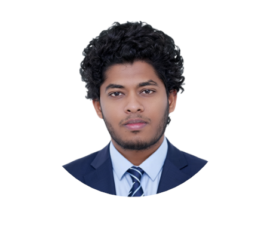
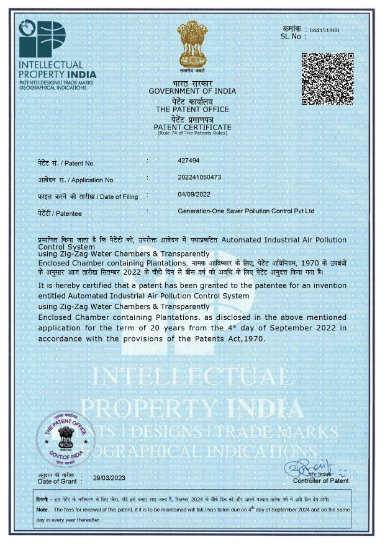
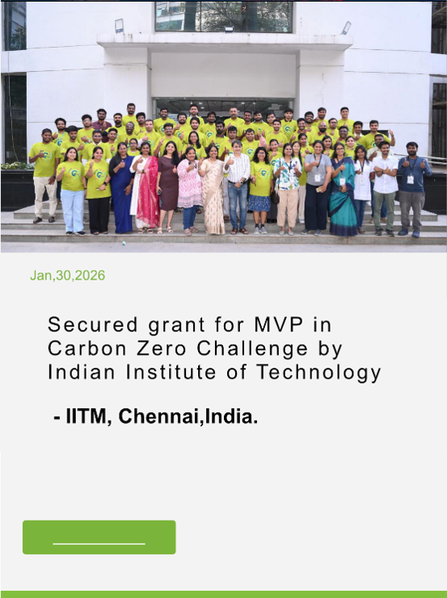
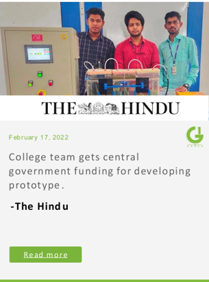
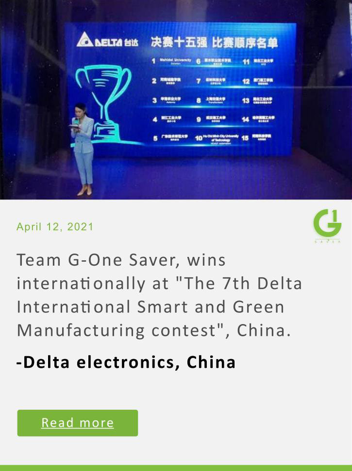
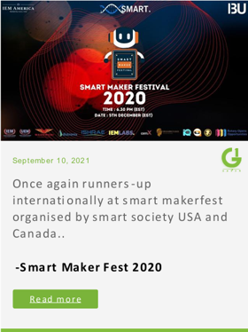

Abu Dhabi · Mechatronics · Clean industry
Mohamed Razeen Ramlan
R&D Engineer
I design machines in SolidWorks and close the loop with sensing, embedded control, and machine learning. The work sits where sheet metal, airflow, and intelligent software meet — industrial air cleaning, adaptive bioprocesses, and laboratory instruments that leave the screen and run in the field.
- SolidWorks
- AI & Machine Learning
- Flow simulation
- Embedded & IoT

01 — Profile
An R&D engineer who stays with the machine from the first sketch to commissioning.
I am a mechatronics engineer based in Abu Dhabi, with the core of my practice built at Generation One Saver as Design & R&D Engineer and operational lead. I take industrial problems through parametric modelling, tolerance and DFM review, fabrication, sensor integration, and prototype validation.
SolidWorks is the workshop I think in: sheet metal, structural members, machining, stress, and flow simulation, then 2D drawings and DXF flat patterns that a laser cutter can actually run. Alongside that, I put machine learning on the hardware — image models on a Raspberry Pi, air-quality models for predictive maintenance, and motion models that turn a camera into a robot interface.
- Education
- B.E. Mechatronics, Anna University — Bannari Amman Institute of Technology, 2018–2022. GPA 8.37/10.
- Venture
- 12-month startup management programme, NSRCEL, IIM Bangalore.
- Languages
- Tamil, English, beginner Arabic and German.
- Now
- Abu Dhabi, UAE · open to R&D, design, and intelligent-systems roles.
02 — How I work
SolidWorks for the body of the machine. AI for the decisions it makes while it runs.
CAD
SolidWorks, end to end
Parametric parts and assemblies, sheet metal, structural members, Toolbox hardware, and machining features. I release 2D manufacturing drawings with tolerances, DXF and DWG flat patterns for laser cutting, and models that fabricators can bend and weld without a second translation.
- Flow Simulation for pressure drop, CFM, and duct networks
- Stress and factor-of-safety checks, including a 900 kg structural case
- DFM and DFA before a design leaves the model
- AutoCAD laser drawings and Blender for communication
AI
Machine learning on real hardware
Models are useful here when they change a setpoint. I train and deploy perception and control logic in Python and PyTorch, then wire the result into Raspberry Pi, ESP32, and cloud state so a machine can adapt instead of waiting for an operator.
- Vision models that read microalgae colour, opacity, and growth
- Air-quality learning for predictive maintenance and pollution reports
- MediaPipe motion capture driving an articulated robot
- Reinforcement learning, Unreal Engine simulation, and AI-agent workflows
SYS
Sensing, control, build
Control panels, VFDs, gas and light sensors, I2C, UART, and Wi-Fi. I commission the rig, troubleshoot the loop, and stay with fabrication: FDM in PLA and ABS, laser-cut sheet, bending, welding, and CAM aluminium.
03 — Selected work
Projects, with the photographs and models behind them.
Each collage is drawn from build photos, SolidWorks studies, dashboards, and simulations.
Flagship · Granted patent
G1S Mark II — Zig-Zag Wet Scrubber
An industrial emission system whose zig-zag chamber captures particulate at the source. I designed and CFD-sized the equipment for furnace duct networks, modelled it in SolidWorks, and followed a 4,000 CFM, 20 HP unit through fabrication and delivery to a ferrous foundry — stainless chamber, structural frame, custom blower, and electrical panel included.
Air-quality sensors close the loop on a variable-frequency drive. Machine learning on that stream supports predictive maintenance alerts and automated pollution reporting, with live readings in Firebase and an operations dashboard.
- 99.74% PM2.5
- 99.84% PM10
- 1,500–4,500 CFM
- Patent 427494
Carbon · Vision feedback
Photobioreactor & automated culture rack
A downstream carbon module: high-density microalgae take residual CO₂ and turn it into oxygen and harvestable biomass. I designed the culture rack so each environment — light, temperature, nutrients, airflow — can be simulated and steered independently. The enclosure is 3 mm mild steel with a structural frame, acrylic panels, and heating and cooling.
The intelligence is visual. A Raspberry Pi watches culture colour and opacity, chooses set-points, and writes them to Firebase. An ESP32 reads those values and actuates the rack. Experimental runs can push growth, then report the metrics. Biomass productivity sits around 0.5–1.2 g/L/day, on standard 100 mm tubes that can sit after the zig-zag chamber.
- Image-based ML
- Raspberry Pi + ESP32
- CO₂ to biomass
Laboratory instrument
Multi-gas laboratory analyzer
A bench instrument that folds particulate, flue-gas, and VOC sensing into one kit for nanomaterial work — which gases a material absorbs, and how completely. The enclosure is 3 mm mild-steel sheet with FDM parts in PLA and ABS, a viewing window, and a live multi-channel display.
Sensors cover PM, CO₂, CO, NOx, SOx, NH₃, and VOC. The same sensing stack that watches a factory stack is repackaged here for scientists, laboratory staff, and clean-room checks.
- PM · CO₂ · NOx · SOx · VOC
- Sheet metal + FDM
- Nanomaterial characterization
Consultancy · SolidWorks
Pharmaceutical & process instruments
Design consultancy for Pharmag Instruments and QLIA, plus process machines for Banfab and Veyyon. I modelled enclosures in mild steel, stainless steel, and machined aluminium, backed by motion studies and heat-exchange calculations, then followed them into fabrication.
The set includes a banana-fibre softening chamber with IoT and an app, a 15-point calibration pH meter, blower and chip-handling equipment, and a parking-lot vision monitor. The SolidWorks studies below are the same models the sheet-metal shop received.
- SolidWorks sheet metal
- 15-point pH meter
- IoT instruments
Personal R&D · Perception
Articulated robot from human motion
A vision pipeline that turns a person’s arm into joint commands, aimed at cutting operator error on cranes and heavy machinery. MediaPipe reads a 720p webcam on a Raspberry Pi, tracks shoulder, elbow, and wrist, and converts that pose into axis values.
The same stream can drive an Unreal Engine simulation or a physical articulated robot — the target platform is a Delta DRV70L. It is the clearest picture of how I like to work: a learning model, a real-time loop, and a machine at the end of it.
- MediaPipe
- Unreal Engine
- Raspberry Pi
- Reinforcement learning
04 — Experience
One company, many machines, from concept to the client’s floor.
-
2022 — 2026
Design & R&D Engineer · Operational Lead
Generation One Saver Pvt Ltd · Coimbatore
Led mechanical design, prototyping, and commissioning for air-pollution control and laboratory systems. Ran day-to-day operations, the parts library, rapid prototyping, client presentations, and grant documentation, and coordinated mechanical, embedded, CAD, and biology work.
-
Consultancy
Mechanical design for industrial and pharmaceutical clients
Pharmag Instruments · QLIA · Banfab · Veyyon Plywoods
Turned manual processes into automated mechanisms and delivered sheet-metal enclosures, blowers, and instrument mechanics that shops could fabricate.
05 — Patent & recognition
A granted patent, and the competitions that funded the prototypes.

Granted · India
Automated Industrial Air Pollution Control System
Patent No. 427494, co-inventor, filed through Generation One Saver. Twenty-year term from 4 September 2022. The certificate names the zig-zag water-chamber system.
-

Carbon Zero Challenge 5.0 IIT Madras · grant awardee -

Texas Instruments IICDC 2019 Finalist · startup package -

International Delta Cup 2020 Runner-up · Delta, China -

Smart Maker Fest Runner-up · USA & Canada
Prototype funding also includes MeitY GENESIS EIR 2025, NIDHI PRAYAS, and the IVP programme — together, INR 2.4 million in government innovation grants.
06 — Contact
If the machine needs a designer who can also teach it to look and adjust, write to me.
R&D, SolidWorks product design, intelligent environmental systems, and instrument development.